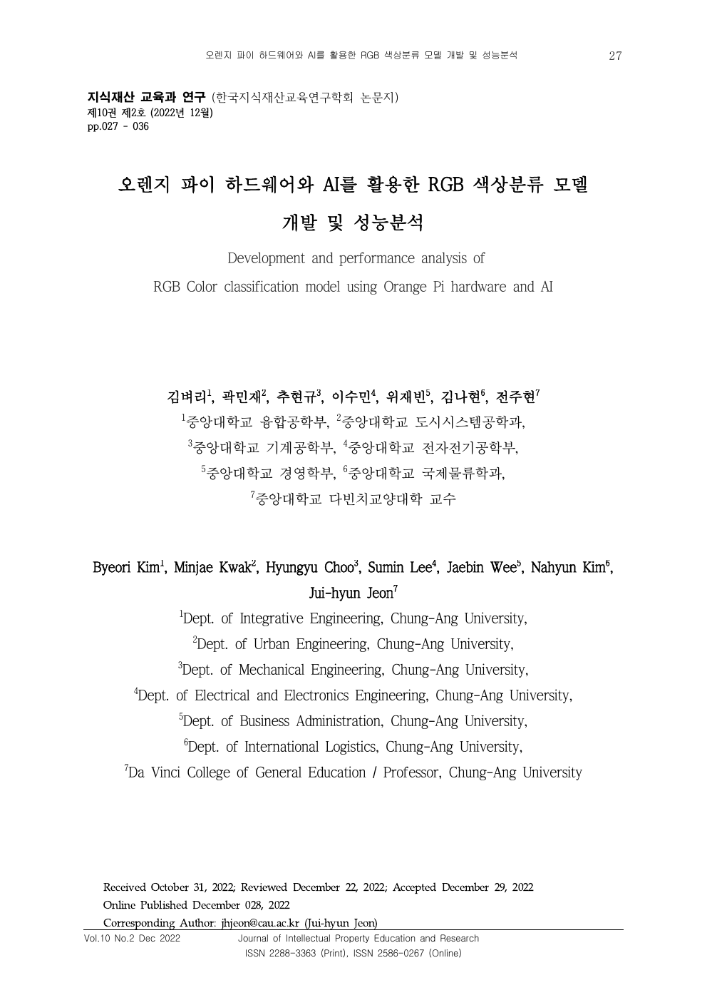

같은 모델, 다른 결과
촬영 위치와 조도가 매번 달라 R, G, B 입력값이 흔들렸고, 동일 모델의 실험 결과도 달라졌다.
DA VINCI CREATIVE CREDIT, COMPUTER VISION
같은 팀장 경험 안에서 두 문제를 풀었다. 오렌지파이 카메라의 색상 분류는 데이터 수집 조건을 통제해 재현성을 확보했고, 자율주행 키트는 YOLO 인지 결과를 A-star 경로 탐색과 PID 제어로 연결했다.

색상 분류에서는 촬영 위치, 각도, 조도와 표면 조건을 고정했다. 자율주행 키트에서는 장애물이 차선을 가리는 실패 장면에서 문제를 차선 인식이 아닌 차선과 장애물의 구분으로 다시 정의했다.
RGB 논문 원문 열기 ↗촬영 위치와 조도가 매번 달라 R, G, B 입력값이 흔들렸고, 동일 모델의 실험 결과도 달라졌다.
촬영 위치, 카메라 각도, 밝기, 표면 조건을 체크리스트로 만들고 데이터를 다시 수집했다.
Decision Tree, Random Forest, CNN을 같은 조건에서 비교해 모델보다 입력 재현성이 먼저라는 결론을 확인했다.
| 모델 | 정확도 | ROC-AUC |
|---|---|---|
| Decision Tree | 99.48% | 0.9961 |
| Random Forest | 98.10% | 0.9858 |
| CNN | 99.91% | 0.9993 |
차선과 장애물을 한 검출기에서 분리
장애물을 피하는 경로 탐색
탐색 경로를 실제 조향으로 추종
팀장으로 인지, 판단, 제어 알고리즘 설계와 역할 분담을 맡았다. 빈 트랙에서만 잘 도는 로직을 고치는 대신, 장애물이 차선을 가리는 조건을 별도 시나리오로 만들고 주행 결과로 개선을 확인했다.